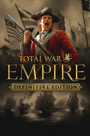

Total War: EMPIRE - Definitive Edition
Detalles
 |
|
| Tiempo de juego | No Jugado |
| Última actividad | Nunca |
| Añadido | 14/10/2025 17:48:21 |
| Modificado | 14/10/2025 17:49:02 |
| Estado de finalización | Not Played |
| Librería | Playnite |
| Fuente | 2TB GAS |
| Plataforma | Macintosh PC (Linux) PC (Windows) |
| Fecha de lanzamiento | 04/03/2009 |
| Puntuación de la Comunidad | 89 |
| Puntuación de la Crítica | 90 |
| Puntuación de usuario | |
| Género | Estrategia |
| Desarrollador | Creative Assembly Feral Interactive (Linux) Feral Interactive (Mac) |
| Editor | Feral Interactive (Linux) Feral Interactive (Mac) Sega |
| Característica | Cooperativo Cooperativo En LAN Cooperativo En Línea Cromos De Estadísticas Jcj Jcj En LAN Jcj En Línea Logros De Multijugador Préstamo Familiar Un Jugador |
| Enlaces | Punto de encuentro Discusiones Guías Noticias Página de la tienda PCGamingWiki Logros |
| Tag | Acción Ambientales América Aventura Bélicos Clásico Estrategia Estrategia por turnos ETR Gran banda sonora Gran estrategia Históricos Marítimos Militares Multijugador Por turnos Tácticas en tiempo real Tácticas por turnos Tácticos Un jugador |
Descripción

Completa tu colección de Total War con esta Definitive Edition de Total War: EMPIRE, que incluye todos los DLC y actualizaciones desde el lanzamiento del juego:
Atrévete con la Campaña Warpath y lidera una de las 5 facciones de nativos americanos en una guerra épica para defender tus tierras y expulsar a los invasores.
Forma tus ejércitos con los packs de Unidades de élite de Oriente, Unidades de élite de Occidente, Unidades de élite de América y Unidades de fuerzas especiales y contenido adicional, que en total añaden más de 50 unidades de élite nuevas.
Total War: EMPIRE Definitive Edition ofrece cientos y cientos de horas de juego absorbente con todo el contenido que se ha creado para él. Sigue leyendo para descubrir más información.
Acerca de Total War: EMPIRE
Controla la tierra, domina los mares, forja una nueva nación y conquista el mundo.
Total War: EMPIRE lleva la saga Total War al siglo XVIII, el Siglo de las Luces, una época de agitación política, avances militares y pensamiento radical. Todo capturado con asombroso detalle.
Total War: EMPIRE introduce multitud de nuevas características revolucionarias, entre las que se incluyen combates navales en 3D real. Por primera vez en la serie Total War, podrás dirigir de forma intuitiva un único barco o extensas flotas en paisajes marinos repletos de efectos meteorológicos y de agua extraordinarios que jugarán un gran papel en lo que acabará siendo tu glorioso triunfo o vergonzosa derrota. Después de bombardear al enemigo con los cañones, acércate para amarrar su barco y prepárate para abordar: toma el control de tus hombres mientras luchan mano a mano en las cubiertas de estos mastodontes de madera.
Además, Total War: EMPIRE incluye mejoras adicionales para las batallas en 3D y el mapa de campaña por turnos típicos de la serie Total War. Las batallas en tiempo real presentan nuevos retos con la inclusión del cañón y del mosquete, lo que impone a los jugadores el desafío de dominar formaciones y tácticas nuevas conforme la pólvora gana importancia en la guerra. El mapa de campaña, el punto central de la experiencia Total War, introduce una variedad de elementos nuevos y actualizados, entre los que se incluyen sistemas nuevos de comercio, diplomacia y espionaje con agentes; una interfaz de usuario refinada y simplificada; consejeros mejorados; y una mayor ambientación, al incluir las riquezas de la India, la turbulenta Europa y, por primera vez, el potencial sin explotar de Estados Unidos.
Acerca de la Campaña Warpath
Un nuevo y detallado mapa de la campaña norteamericana que amplía aún más la experiencia de Total War: EMPIRE, con 5 nuevas facciones de los nativos americanos, y nuevas unidades y tecnologías.
Vive las batallas en la nueva Campaña Warpath y lidera una de las 5 nuevas facciones en una guerra épica para defender tus territorios y expulsar a los invasores. O lucha con estas unidades y sus habilidades únicas en el modo multijugador.
• 5 nuevas facciones con las que jugar, entre las que se incluyen las naciones pueblo, cheroquis, iroquesas, huronas y de las praderas.
• Expande los territorios norteamericanos. Un nuevo mapa de la campaña norteamericana más detallado, con nuevas regiones y una nueva fecha de inicio.
• Nuevas unidades de élite, entre las que se incluyen los guerreros de élite mohawk, los perros soldados cheyenne, los guerreros exploradores navajos y muchos más.
• Dos nuevos tipos de agentes. Infíltrate en territorio enemigo con la nueva unidad chamán y sabotea al enemigo con la astucia del explorador.
• 18 nuevas tecnologías tribales, entre las que se incluyen la medicina espiritual, la llamada salvaje y andar en sueños, que crean un nuevo árbol tecnológico tribal.
• Nuevos objetivos de victoria para cada una de las facciones disponibles.
Acerca de Unidades de élite de Oriente
Unidades de élite de Oriente añade 12 nuevas unidades de élite a las facciones marathas y otomanas, y se adentra más en el este que sus predecesores de Total War.
La mayoría de estos soldados están curtidos en la batalla. Unos son temibles bandidos, otros cuentan con una importante formación académica y son guerreros bien entrenados.
Aportarán una amplia gama de opciones tácticas para intimidar y someter a tus enemigos.
• Mercenarios haydut (Imperio otomano)
• Boyardos de Valaquia (Imperio otomano)
• Panduks bosnios (Imperio otomano)
• Caballería armada circasiana (Imperio otomano)
• Arqueros armenios (Imperio otomano)
• Kuloglus libios (Imperio otomano)
• Tropas de apoyo palestinas (Imperio otomano)
• Jenízaros del Cairo (Imperio otomano)
• Nizam-I-Cedit montados (Imperio otomano)
• Rajput Zamindar (Marathas)
• Poligar (Marathas)
• Barawardis (Marathas)
Acerca de Unidades de élite de Occidente
Unidades de élite de Occidente añade 14 unidades totalmente nuevas y únicas de las facciones occidentales más importantes. Con unas unidades de infantería y caballería totalmente nuevas, equipadas con las mejores armas y que han recibido un entrenamiento de lo más riguroso, Unidades de élite de Occidente aporta aún más opciones en el campo de batalla a todos esos amantes de las tácticas que quieren derrotar a sus enemigos.
• Granaderos húngaros (Austria)
• Guardia montada (Bretaña)
• Guardias suizos (Francia)
• Guardia azul (Provincias Unidas)
• Gardes du Corps (Provincias Unidas)
• Granaderos de la guardia (Polonia-Lituania)
• Segundos Húsares (Prusia)
• Bosníacos (Prusia)
• Frei-Korps (Prusia)
• Gardes à cheval (Rusia)
• Guardia de a pie Siemionowski (Rusia)
• Guardia valona (España)
• Legión de los Estados Unidos (Estados Unidos)
• US Marines (Estados Unidos)
Acerca de Unidades de élite de América
Unidades de élite de América añade 15 nuevas unidades de élite a las facciones de América, Gran Bretaña y Francia de Total War: EMPIRE. Durante la última mitad del siglo XVIII, la revolución política de trece colonias británicas en América del Norte llevó finalmente a la Declaración de Independencia de 1776 y cambió la historia para siempre. Las 15 unidades que incluye han desempeñado una función muy importante en la Revolución americana. Aunque se basan principalmente en las tradiciones militares europeas, su identidad está unida al destino de Estados Unidos, lo que da a estos hombres una valentía y audacia incomparables a otros soldados del campo de batalla.
• 1º de Delaware (Estados Unidos)
• 1º de Maryland (Estados Unidos)
• 2º de Dragones ligeros continentales (Estados Unidos)
• 2º de Nueva York (Estados Unidos)
• 33º de infantería (Gran Bretaña)
• Dragones de Brunswick (Gran Bretaña)
• Granaderos hessianos (Gran Bretaña)
• Regimiento real del rey de Nueva York (Gran Bretaña)
• Legión de Lee (Estados Unidos)
• Cuerpo provisional de fusileros de Morgan (Estados Unidos)
• Legión de Pulaski (Estados Unidos)
• Regimiento real Deux-Ponts (Francia)
• Fusileros reales galeses (Bretaña)
• Compañía de tiradores selectos/Rangers de Fraser (Bretaña)
• Dragones ligeros de Tarleton (Bretaña)
Acerca de Unidades de fuerzas especiales y contenido adicional
Unidades de fuerzas especiales añade seis de los cuerpos militares más influyentes del siglo XVIII. Como mandan los cánones de la época, ninguna de estas unidades de élite aparecerá en el mapa de campaña hasta que juegues con una facción determinada o tengas bajo control una región geográfica en concreto. Este pack también incluye tres unidades de élite exclusivas adicionales.
• HMS Victory
• Rangers de Roger
• Cañón órgano otomano
• Ghoorkas
• Guerrillas terrestres corsas
• Regimiento de Bulkeley
• Húsares de la Muerte
• USS Constitution
• Amazonas de Dahomey